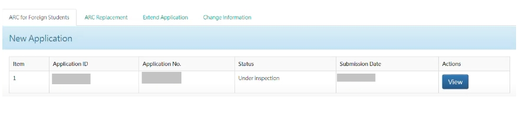

HOW TO APPLY Alien Residence Certificate
ARC (居留證 / jūliúzhèng)

While studying in Taiwan, foreign students must have an ARC (Alien Resident Certificate) as an identity card (a type of ID card in Indonesia). Each student must apply for ARC within 15 days (During the pandemic to 30 days) after arrival (from Resident Visa). ARC must be extended once a year.
- Cost of creating ARC:
- Overseas Chinese Students (僑生): 500NT
- International Students (外籍生): 1,000NT
Required documents (online registration)
-Passport (still valid for at least 6 months)
-Resident Visa
-Color photograph (white background)
-Admission Letter
-Proof of residence in Taiwan (if you live in a dorm, you can ask for from of each school)
-(School Attendance Certificate)
-(for Overseas Chinese Student)
-Proof of scholarship (for International Students who receive scholarships)
HOW TO APPLY? (Online Application )
1.Go to the registration link: https://coa.immigration.gov.tw/coa-frontend/student/entry/foreign-student Then click "I want to apply"
2. Clik “Create an Account”
3. Fill in the required data, then click “Register”
4. After that, a notification will appear that the registration has been successful and you will get a verification email. Click the link listed in the email then the registration has been successful.
5. After successful registration, return to the website. Enter your account and password, then click "Login"
6. On menu page “Application”, choose “First-time ARC Application of Foreign Students and Overseas Chinese Students”
7. Clik “New Applicant” and click “Agree” on page “Statement for Use”, and then click“OK”
8.Upload the required data and documents, then click “Save”
9. After all the data has been completely filled in and sent, a notification will appear that the application has been sent and will go through the checking process first. You will also get an application number (which will be sent to your email). Don't forget to keep updated with your ARC creation process. The process can be checked on the same website, on the main page of the “New Application” section. 
10. The process of checking data and documents usually takes 5 working days (if there are no errors in filling in the data). If your data is incomplete or there are errors, you must make corrections (3 days after receiving the notification). After the correction is made, the checking of the data will be processed again (approximately 5 working days). If no corrections are made after 3 days of notification, ARC registration will be rejected and you will have to re-register.
11. For payment, click the “Online Payment” menu, then click “Permit Payment” and select a payment method.
12. You will receive an email notification that your ARC is complete. Click the “Download” menu and select “Receipt Download”, then print the receipt as evidence at the time of ARC collection at the immigration office (移民署).

HOW TO EXTEND? (Online Applications)
ARC extension can be done 30 days before the Expiry Date on the same website. Click the "Application" menu, select "Extension Application" and do the same steps.